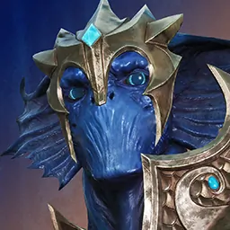
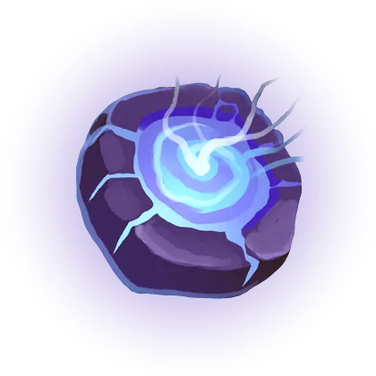
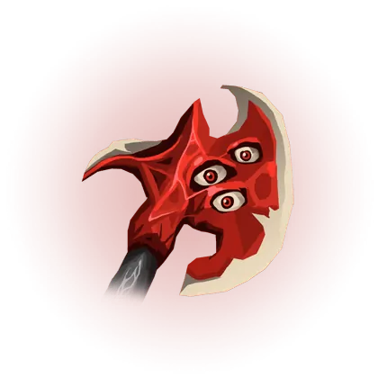
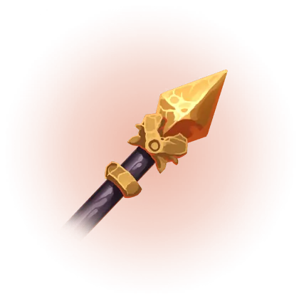
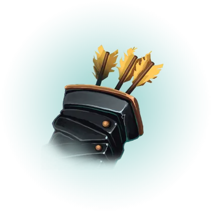
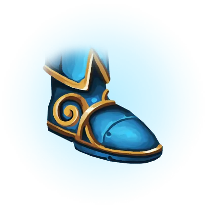
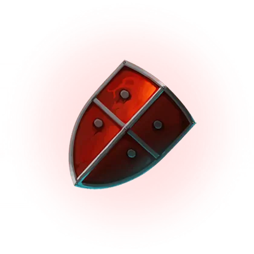
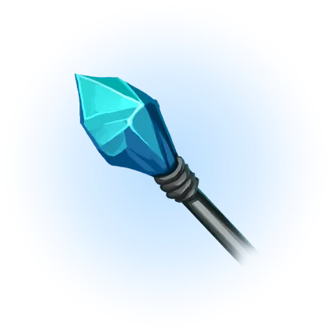

Patch 1.17.2
Released 2026-10-13 · Scout overview, predictions · official notes ↗
TL;DR — what actually changes how the game plays
Valmont was overtuned and the devs said so
Lilith's damage, Rupture, the ultimate and both augments all come down. The notes explain they ship new heroes slightly over-strong to cover the learning curve, and that this time they went too far.
The carry pecking order gets rearranged
Revenant and Drongo take real cuts at the top while Murdock and TwinBlast get the stats they needed. The notes name Revenant and Drongo as the reason the other two were stuck.
Crucible stops being a different game balance-wise
The custom damage, healing and damage-taken modifiers are gone, so 3v3 now runs on live 5v5 numbers. Stacking items and hero passives also work there now.
Weald finally takes a Major cut
After two patches of trimming only the minors, the missiles themselves lose damage: base 8 -> 7 and the on-hit modifier 30% -> 20%. Taproot drops again too.
Defensive minors all shrink at once
Immaculate 12% -> 10%, Dampening 12% -> 10%, Patina's shield down at every level, Lotus max health 1.5% -> 1.25%. Stat-check durability is the theme being hit.
Bruisers who had fallen off get real help
Bayle gains attack speed growth, armor growth and movement speed plus scaling across his kit. Terra's Highland Hurl finally shreds armor on a rank curve, and Sevarog's hitboxes stop fighting him.
Hero changes 3 meta-shifting · 15 notable · 5 minor · bugfix-only heroes excluded
 ▲
Bayle
▼
Baron Valmont
▲
Bayle
▼
Baron Valmont
 ▼
Revenant
▲
Kwang
▼
Revenant
▲
Kwang
 ▲
Murdock
▲
Murdock
 ▲
Renna
▲
Sevarog
▲
Renna
▲
Sevarog
 ▲
Terra
▲
Terra
 ▲
TwinBlast
▲
Wukong
▲
TwinBlast
▲
Wukong
 ▼
Drongo
▼
Drongo
 ▼
Greystone
▼
Greystone
 ▼
Grux
▼
Grux
 ▼
Lt. Belica
▼
Lt. Belica
 ▼
Scarlett
▼
Scarlett
 ▼
Zarus
▼
Zarus

◆ Ikra ◆
Khaimera
◆
Khaimera
 ▲
Gadget
▲
Gadget
 ▼
Shinbi
▼
Shinbi
 ▼
The Fey
▼
The Fey
 ▼
Yurei
◆
Aurora
▼
Yurei
◆
Aurora
3 heroes
full page ↗
Bayle
offlane
▲ Buff
- Attack speed growth 1.4 -> 1.8, physical armor growth 4.8 -> 5.2, movement speed 690 -> 695
- Cursed Edge bonus physical power scaling 80% -> 85%, magical power scaling 50% -> 55%
- Dire Howl damage-taken healing 10/14/18/22/26% -> 10/15/20/25/30%, mana cost 60 -> 60/65/70/75/80
- Skull Crusher bonus physical power scaling 110% -> 125%, cooldown 17/15.5/14/12.5/11 -> 16/14.5/13/11.5/10, mana cost 40 -> 40/45/50/55/60
WhyThis is the biggest single package in the patch. Attack speed growth goes 1.4 to 1.8, physical armor growth 4.8 to 5.2, movement speed 690 to 695, and Skull Crusher reaches 125% bonus physical power scaling on a 16/14.5/13/11.5/10 second cooldown.
What it'll change45.5% over 8,220 ranked offlane games is the kind of number that only moves on a patch like this one. Dire Howl now heals 30% of damage taken at max rank, so he can hold trades he used to walk away from. Watch the mana, because Dire Howl and Skull Crusher both cost more as they rank up, and spamming them in lane will leave him empty. Expect a multi-point climb, with the honest caveat that a hero this far down rarely jumps straight to the top of the lane.
Sim read (pre-1.17.2): top field core Physical Bruiser (Physical-Def) — Overlord, Rapture, Cursed Scroll · 56.5% wr · 456 games
full page ↗
Baron Valmont
carry
▼ Nerf
- Physical armor 28 -> 26
- Hemophagia: Lilith damage 15/23/31/39/47 -> 12/20/28/36/44, mana restore on unit kill 3-41 -> 3-38
- Rupture damage 20/29/38/47/56 -> 20/28/36/44/52, cooldown 8/7.5/7/6.5/6 -> 9/8.5/8/7.5/7
- Exsanguinate damage 40/70/100 -> 40/65/90 (magical scaling 22% -> 23%), healing 25/45/65 -> 20/40/60 (scaling 20% -> 22%)
- Augments: Sanguine Banquet omnivamp bonus mana scaling 0.5% -> 0.4% and hero-death mana 30 -> 20; Rupturing Fangs missing-health damage modifier 100% -> 85%
WhyMost of his damage comes down at once. Lilith's strikes fall from 15/23/31/39/47 to 12/20/28/36/44, Rupture drops to 20/28/36/44/52 on a 9/8.5/8/7.5/7 second cooldown, and Exsanguinate's healing drops from 25/45/65 to 20/40/60 even as its scaling rises from 20% to 22%.
What it'll changeWe have no measured win rate for him, and the gap is on our side. Our stats hero list comes from a catalog frozen on 2026-08-28, before he existed, so pred.gg was never asked about him. The devs write that they ship a new hero slightly over-strong to cover the learning curve and that they overshot here. Expect his all-in to need real setup now. Rupture at 9 seconds base is no longer a filler button, and Rupturing Fangs gives less for a finish, with its missing-health damage modifier down from 100% to 85%.
full page ↗
Revenant
carry
▼ Nerf
- Health 695 -> 690
- Bounty Hunter bonus physical power 3-13.2% (+0.6% per level) -> 3-11.5% (+0.5% per level)
- Obliterate missile damage 35/50/65/80/95 -> 30/45/60/75/90
- Hellfire Rounds fourth-shot movement speed 12% -> 10%
- Reckoning cooldown 135/120/105 -> 140/125/110, stat steal 8%/9%/10% -> 6%/7%/8%
WhyThe cut hits his scaling and his reset together. Bounty Hunter now tops out at 11.5% bonus physical power with a 0.5% step per level, Obliterate's missile damage drops to 30/45/60/75/90, and Reckoning steals 6%/7%/8% of stats on a 140/125/110 second cooldown.
What it'll changeHe sat at 50.8% over 24,188 ranked carry games, and the notes call him the pinnacle of the role, so this is aimed squarely at the top. The ultimate is the part to re-learn: at 140 seconds for the first rank, Reckoning becomes a cooldown to hold for an objective rather than a trade button. Expect roughly a point off that number, and expect him to stay a first-pick-quality carry.
Sim read (pre-1.17.2): top field core Crit Burst — Vanquisher, Imperator, Terminus · 55.1% wr · 1,029 games
Notable 15 heroes
full page ↗
Kwang
offlane
▲ Buff
Notable
- Heavenly Blade cleave 20% -> 25%
- Judgement Of The Heavens tether duration 1.3s -> 1.45s
- Surge Of The Heavens damage 75/100/125/150/175 -> 75/105/135/165/195
- Fury Of The Heavens damage 230/340/450 -> 250/360/470, slow 45/55/65% -> 50/60/70%
WhyEvery button gets bigger. Surge Of The Heavens goes to 75/105/135/165/195, Fury Of The Heavens to 250/360/470 with a 50/60/70% slow, and the sword tether holds for 1.45 seconds instead of 1.3.
What it'll change47.3% over 7,568 ranked offlane games, and 47.7% over 6,277 jungle games, so he needed help in both seats. The tether is the practical change: 1.45 seconds is enough to walk in behind the sword before it returns. Expect a couple of points across both roles rather than a jump in one of them.
Sim read (pre-1.17.2): top field core Magical Burst — Spirit of Amir, Oathkeeper, Tainted Scepter · 50.0% wr · 100 games
full page ↗
Murdock
carry
▲ Buff
Notable
- Physical power 55 -> 57, health regen 1.35 -> 1.5, attack speed growth 1.4 -> 1.6
WhyA pure stat buff aimed at his basic attacks. 57 physical power, 1.6 attack speed growth and 1.5 health regen mean he wins more of the long-range exchanges his kit is built around.
What it'll change47.5% over 19,205 ranked carry games made him one of the weakest carries played at volume, and the notes name Revenant and Drongo as the reason. With those two trimmed, play Murdock for the thing he does best: hold the long angle and take free attack trades the enemy carry cannot answer. Expect a point or two back toward even.
Sim read (pre-1.17.2): top field core Crit Burst — Lightning Hawk, Vanquisher, Imperator · 56.5% wr · 1,183 games
full page ↗
Renna
midlane
▲ Buff
Notable
- Mortal Coil damage 70/100/130/160/190 -> 70/105/140/175/210, magical power scaling 50% -> 60%, execution threshold 6% -> 8%
WhyOne ability upgraded end to end. Mortal Coil goes to 70/105/140/175/210 with 60% magical power scaling, and the execution threshold rises from 6% to 8% health.
What it'll change50.4% over 18,914 ranked midlane games, an even hero getting a clean buff. Use the execute deliberately: at 8% she finishes targets who used to walk out, so hold the cast for the kill rather than spending it as poke. Expect about a point in mid, and treat the 55.1% offlane line over 423 games as too small a sample to plan a pick around.
Sim read (pre-1.17.2): top field core Magical Burst — Entropy, Wraith Leggings, Overseer · 57.5% wr · 1,728 games
full page ↗
Sevarog
offlane
▲ Buff
Notable
- Siphon bonus monster damage 30/35/40/45/50 -> 40/45/50/55/60, faster cast frame (7.5 -> 6) and animation (1.2x -> 1.3x)
- Colossal Blow range 375 -> 425, cone angle 130 -> 120
WhyThese changes are mostly about connecting. Colossal Blow reaches 425 units instead of 375, with its cone angle down from 130 to 120, and Siphon hits monsters for 40/45/50/55/60 bonus damage with a faster cast frame and animation.
What it'll change46% over 8,444 ranked games, with 45.7% over 5,798 offlane games and 47% over 2,505 jungle games. The faster Siphon is the stacking fix: stacks that used to slip away as a minion died should land now. Expect the jungle number to move more than the offlane one, since the bonus monster damage is worth most inside camps.
Sim read (pre-1.17.2): top field core Physical-Def Frontline — Fire Blossom, Tainted Guard, Fist of Jazuul · 54.8% wr · 80 games
full page ↗
Terra
offlane
▲ Buff
Notable
- Highland Hurl bonus physical and magical armor scaling both 30% -> 40%
- Physical armor shred 20% flat -> 20/22.5/25/27.5/30% by rank
- Slow and root duration 1/1.05/1.1/1.15/1.2s -> 1.25s flat
WhyHighland Hurl turns into a real armor-breaking tool. It now scales at 40% of her bonus physical and magical armor, shreds 20/22.5/25/27.5/30% physical armor by rank, and roots for a flat 1.25 seconds from the first point.
What it'll change46.9% over 4,477 ranked offlane games. The early lane changes most, because a rank-one root now lasts 1.25 seconds instead of 1 second, which is long enough for a jungler to arrive. Build her armor and the damage follows at 40% scaling. Expect a couple of points, concentrated among players who already pair her shred with a physical-damage team.
Sim read (pre-1.17.2): top field core Physical-Def Burst — Fire Blossom, Tainted Guard, Inquisition · 54.6% wr · 164 games
full page ↗
TwinBlast
carry
▲ Buff
Notable
- Vaporize bonus physical power scaling 90% -> 95%, on-hit modifier 170% -> 200%
- Vortex Grenade total physical power scaling 40% -> 45%
WhyBoth abilities finally add damage to his attack pattern. Vaporize scales at 95% bonus physical power with the on-hit modifier up from 170% to 200%, and Vortex Grenade scales at 45% of total physical power.
What it'll change49.1% over 21,375 ranked carry games is a shade under even, and this should push him over it. The on-hit jump rewards buying attack items first and firing Vaporize inside his attack rhythm instead of as an opener. Expect about a point, and more if the Revenant and Drongo cuts open the seat the notes say those two were blocking.
Sim read (pre-1.17.2): top field core Crit DPS Carry — Solaris, Ashbringer, Imperator · 51.9% wr · 552 games
full page ↗
Wukong
jungle
▲ Buff
Notable
- 84000 Hairs: hair stacks no longer decay out of combat, so clones stay available
Why84000 Hairs stacks no longer decay out of combat, so clones stay available. Previously a quiet stretch of farming could leave him arriving at a fight without them.
What it'll change48.6% over 3,466 ranked jungle games, a much smaller pool than the other junglers in this patch. The habit to drop is timing rotations around whether his stacks survived the walk, because he can now gank with clones every time. Expect a modest gain, since this adds consistency rather than raw power.
Sim read (pre-1.17.2): top field core Physical Frontline — Mindrazor, Augmentation, Painweaver · 46.7% wr · 58 games
full page ↗
Drongo
carry
▼ Nerf
Notable
- Physical power 57 -> 56, health 695 -> 680, physical armor 27 -> 26, magical armor 29 -> 28
WhyA durability and damage trim with no kit change at all. 680 health, 56 physical power, 26 physical armor and 28 magical armor make him easier to kill in exactly the lane trades he was winning.
What it'll change51.4% over 24,147 ranked carry games put him near the top of the role, and the notes name him alongside Revenant as the reason Murdock and TwinBlast were stuck. Nothing about his buttons changes, so the adjustment is spacing: he no longer has the base stats to stand in a trade and win it on stats alone. Expect him to drift toward 50% and remain a strong pick.
Sim read (pre-1.17.2): top field core Crit Skirmisher — Lightning Hawk, Vanquisher, Tainted Rounds · 58.1% wr · 472 games
full page ↗
Greystone
offlane
▼ Nerf
Notable
- Assault The Gates cooldown refund on hero hit 35% -> 30%; bugfix means the refund now only triggers on a hero or camp leader, as stated
WhyThe reset loop gets harder to hold. Assault The Gates refunds 30% of its cooldown instead of 35%, and the bugfix means only a hero or a camp leader triggers the refund, so hitting minions returns nothing.
What it'll change52.6% over 27,549 ranked offlane games is one of the best lane numbers on the board, and the bugfix is the heavier half of this change. Dashing through a wave to get the ability straight back no longer works, so save it for the hero. Expect a point or more off the offlane line, while the 47% jungle version over 6,025 games should barely notice, since camp leaders still count.
Sim read (pre-1.17.2): top field core Physical Bruiser — Overlord, Rapture, Aegis of Agawar · 55.7% wr · 542 games
full page ↗
Grux
offlane
▼ Nerf
Notable
- Physical power 64 -> 62
- Double Pain mana cost 30/35/40/45/50 -> 40/45/50/55/60
Why62 physical power shaves every attack, and Double Pain's mana cost goes to 40/45/50/55/60. The mana is the sharper half, because that cleave is both his wave clear and his main trade button.
What it'll change51.1% over 18,630 ranked offlane games, with 50.3% over 10,883 jungle games. He can no longer clear and trade with the same mana bar, so the early lane becomes a choice between shoving and fighting. Expect under a point of movement, since nothing about how he engages has changed.
Sim read (pre-1.17.2): top field core Physical Bruiser — Sky Splitter, Basilisk, Rapture · 58.8% wr · 305 games
full page ↗
Lt. Belica
midlane
▼ Nerf
Notable
- Health 700 -> 690
- Innovation ability haste per maxed ability 10 -> 8
- Seismic Assault damage 100/145/190/235/280 -> 100/140/180/220/260, cooldown 16/15/14/13/12 -> 17/16/15/14/13
- Void Drone magical power scaling 20% -> 17.5%
- Void Bomb damage 100/140/180/220/260 -> 95/135/175/215/255
- Combat Veteran augment: movement speed 3% -> 2.5%, passive XP 0.1-3 -> 0.1-2
WhyShe loses damage on three abilities and some of the ability haste that chained them. Seismic Assault drops to 100/140/180/220/260 with its cooldown up to 17/16/15/14/13, Void Bomb drops to 95/135/175/215/255, and Innovation now gives 8 ability haste per maxed ability instead of 10.
What it'll change53.3% over 19,181 ranked midlane games made her one of the strongest mids on the board. Treat Seismic Assault as a committed cast now, because at 17 seconds at rank one a miss leaves her without her clear and her poke. Expect her to come back toward the middle of the mid pack rather than fall out of it.
Sim read (pre-1.17.2): top field core Magical Burst — Combustion, Noxia, Wraith Leggings · 52.0% wr · 456 games
full page ↗
Scarlett
offlane
▼ Nerf
Notable
- Physical armor 36 -> 35, health regen 2.2 -> 2
- Ashen Vow cooldown 9/8.25/7.5/6.75/6 -> 9.5/8.75/8/7.25/6.5
- Minueta cooldown 7/6.25/5.5/4.75/4 -> 7.5/6.75/6/5.25/4.5, critical strike modifier 60% -> 50%
WhyHer damage rhythm slows down. Minueta's critical strike modifier falls from 60% to 50% with its cooldown up to 7.5/6.75/6/5.25/4.5, and Ashen Vow's cooldown goes to 9.5/8.75/8/7.25/6.5.
What it'll change51.6% over 17,217 ranked offlane games. Both of her buttons return slower, so the all-in has to be the right one, with less room to re-engage when it goes wrong. Expect about a point off the offlane number, and the 47% jungle version over 7,262 games has very little room left under it.
full page ↗
Zarus
jungle
▼ Nerf
Notable
- Physical power 64 -> 62
- Coliseum damage 200/325/450 -> 180/305/430, bonus physical power scaling 100% -> 90%
WhyHis ultimate loses its late-game punch. Coliseum drops to 180/305/430 and scales at 90% bonus physical power instead of 100%, so a full-build Zarus gets less out of the same cast.
What it'll change51.4% over 13,613 ranked jungle games, with 49.4% over 7,529 offlane games. Coliseum is still the engage, it just kills fewer people by itself, so have the follow-up ready before jumping in. Expect roughly a point off the jungle number and a smaller dip in the offlane one.
Sim read (pre-1.17.2): top field core Physical Skirmisher — Augmentation, Mutilator, Basilisk · 52.9% wr · 205 games
full page ↗
Ikra
midlane
◆ Mixed
Notable
- Narcosis cooldown 16/15/14/13/12 -> 16/15.5/15/14.5/14
- Brine gold on kill 3/4/5/6/7 -> 3/3.5/4/4.5/5
- Genesis damage 320/480/640 -> 320/460/600, slow 50% -> 40%
- Herald: Harbinger Fathom magical scaling 8% -> 10%, Divine Bubble healing 4/6/8/10/12 -> 5/8/11/14/17 with scaling 10% -> 12%
- Cascade augment damage 10 -> 15, magical power scaling 20% -> 30%
WhyHer solo pressure shrinks while her Herald form gets better. Genesis drops to 320/460/600 with a 40% slow and Brine's gold on kill falls to 3/3.5/4/4.5/5, but Divine Bubble now heals 5/8/11/14/17 with 12% scaling.
What it'll change45.6% over 9,314 ranked games, including 45.8% over 7,257 midlane games, so she was already well short of even. Lean on the Divine Bubble heal and stop expecting Genesis to lock a fight down, since a 40% slow holds people for less. Expect small net movement, with a little upside if players actually take the Cascade augment at 15 damage and 30% magical power scaling.
Sim read (pre-1.17.2): top field core Magical Skirmisher — Combustion, Wraith Leggings, Noxia · 46.1% wr · 1,079 games
full page ↗
Khaimera
jungle
◆ Mixed
Notable
- Physical power 65 -> 63, physical armor 35 -> 30, physical armor growth 3 -> 4
- Ambush bonus physical power scaling 70% -> 80%, slow 25/30/35/40/45% -> 40% flat
WhyHe trades starting durability for a harder gank. Physical armor begins at 30 instead of 35 but grows 4 per level instead of 3, and Ambush scales at 80% bonus physical power with a flat 40% slow at every rank.
What it'll change53.6% over 34,196 ranked jungle games already made him a top pick, so read this as a reshape of his curve. Early invades carry more risk at 30 physical armor and 63 physical power, while a rank-one Ambush slowing 40% makes his first gank much harder to escape. Expect him to hold near where he is, with his strength pushed a few levels later.
Sim read (pre-1.17.2): top field core Physical Bruiser — Overlord, Basilisk, Rapture · 53.6% wr · 1,035 games
Minor 5 heroes
full page ↗
Gadget
midlane
▲ Buff
Minor
- Security Gate max-range travel time 1.35s -> 1.2s
- Tesla Dome magical armor shred 3.5% -> 4%
WhyTwo small quality changes. A full-range Security Gate now travels in 1.2 seconds instead of 1.35, and Tesla Dome's magical armor shred goes from 3.5% to 4%.
What it'll change50.3% over 20,905 ranked games, including 50.1% over 16,033 midlane games and 51.2% over 3,613 support games. The faster gate is the useful half, since an escape that arrives quicker is an escape that works. Expect no visible movement in the win rate and no change to how she is built.
Sim read (pre-1.17.2): top field core Magical Frontline — Azure Core, Entropy, Overseer · 50.0% wr · 251 games
full page ↗
Shinbi
offlane
▼ Nerf
Minor
- Allegro augment: Rushing Beat cooldown reduction 20% -> 15%
- All-Kill damage 44/68/92 -> 44/66/88, magical power scaling per wolf 16% -> 15%
WhyHer ultimate gets smaller at both ends. All-Kill drops to 44/66/88 with each wolf adding 15% magical power instead of 16%, and the Allegro augment cuts Rushing Beat's cooldown by 15% instead of 20%.
What it'll change50.4% over 13,256 ranked offlane games, with 50.9% over 3,717 jungle games. Each wolf now adds 15% magical power instead of 16%, so a full pack is worth less than it was and the same cast lands for a smaller number. Expect well under a point of movement, though the Aion trim to 4 gold every 10 seconds touches her too, and the notes name her for taking it purely to scale.
Sim read (pre-1.17.2): top field core Magical Burst — Orb of Growth, Tainted Scepter, Oathkeeper · 55.4% wr · 281 games
full page ↗
The Fey
midlane
▼ Nerf
Minor
- Bramble Patch movement speed 15% -> 12%
- Harvest Nettles damage 80/120/160/200/240 -> 80/115/150/185/220
WhyBoth halves of her zone come down a step. Harvest Nettles drops to 80/115/150/185/220, and Bramble Patch gives 12% movement speed instead of 15%.
What it'll change51.6% over 21,161 ranked midlane games, comfortably above even. The speed cut is the one she will feel, because the patch doubled as her escape and 12% gets her out of less. Expect under a point of movement and no change to how she is built.
Sim read (pre-1.17.2): top field core Magical Frontline — Combustion, Wraith Leggings, Megacosm · 55.6% wr · 1,073 games
full page ↗
Yurei
jungle
▼ Nerf
Minor
- Severance bugfix: her skulls no longer count as minions for damage calculations and item effects, so minion-damage bonuses stop over-damaging them
WhyA definition fix. Her Severance skulls are no longer treated as minions for damage calculations and item effects, so bonus-minion-damage effects stop over-damaging them.
What it'll change47.3% over 7,109 ranked jungle games, with 50.7% over 1,358 offlane games. In practice the skulls hold up against enemies carrying minion-damage effects, while anything that keyed off them counting as minions stops working. The notes file this as a nerf; expect her number to stay inside its current range either way.
Sim read (pre-1.17.2): top field core Lethality Skirmisher — Malady, Spear of Desolation, The Perforator · 46.6% wr · 260 games
full page ↗
Aurora
jungle
◆ Mixed
Minor
- Glacial Charge bugfixes: the wall now grants movement speed to Aurora and allies standing on it, and it can no longer force minions to path back up the lane
WhyTwo bugfixes on the wall, pulling opposite ways. Glacial Charge now grants movement speed to Aurora and allies standing on it, and it can no longer force minions to path back up the lane.
What it'll change53.4% over 13,237 ranked jungle games and 53.2% over 3,219 support games, both already strong. The exploit mattered most in a solo lane, where walling a wave backwards was a free shove, and that trick is gone. The speed fix gives something back in fights, so expect the win rate to sit roughly where it is.
Sim read (pre-1.17.2): top field core Magical Bruiser (Mixed-Def) — Magnify, Elafrost, Flux Matrix · 52.1% wr · 249 games
Eternals (draft blessings)
No new Eternals. This is a durability pass: Weald takes its first Major cut after two patches of minor trims, and the blessings that make a hero hard to kill — Immaculate, Dampening, Patina, Lotus's health — all come down together. Krix loses some of the bruiser damage that was making it beat Thraex.
tap an Eternal to jump to its change
 Weald
▼ Nerf
Weald
▼ Nerf
- Major: missile base damage 8 -> 7, on-hit modifier 30% -> 20%. Taproot bonus physical power scaling 7% -> 6%.
MeaningThird straight trim, and the first to touch the missiles themselves. The on-hit modifier is the bigger half: it was what made the execute scale with an on-hit build rather than just finish low targets.
 Krix
▼ Nerf
Krix
▼ Nerf
- Cannibalism max health on takedown 30 -> 25. Feeding Frenzy attack speed 12% -> 10%.
MeaningAimed squarely at bruisers picking Krix over Thraex. The notes say there was not enough of a damage trade-off for how much more durable Krix made them.
 Knell
▼ Nerf
Knell
▼ Nerf
- Patina shield 35-290 (+15 per level) -> 30-268 (+14 per level). Dampening damage reduction 12% -> 10%.
MeaningBoth of Knell's quiet defensive picks shrink. Dampening only reduces damage from enemies beyond 1100 units, and the notes admit it had been flying under the radar as an anti-poke tool.
 Lotus
▼ Nerf
Lotus
▼ Nerf
- Major max health per roll 1.5% -> 1.25%. Immaculate damage reduction 12% -> 10%.
MeaningLotus keeps its catch-all identity but stops doubling as a tank blessing. Immaculate's third consecutive cut keeps shaving the above-85%-health damage reduction that decides early all-ins.
 Aion
▼ Nerf
Aion
▼ Nerf
- Philosopher gold every 10s 5 -> 4.
MeaningA free-gold trim. The notes name Shinbi and Countess as heroes taking it purely to scale, since it pays out without ever interacting with an opponent.
Items
tap an item to jump to its change

▲ Flux Matrix ▲ Luxforge Lantern
▲ Mutilator
▲ Oathkeeper
▲ Onixian Quiver
▲ Rift Walkers ▲ Soulbinder
▲ Vainglory ◆ Exodus
▼ Azure Core
Flux Matrix
▲ Buff
Ability haste 10 -> 15, named as a magical-armor option for Aurora, Shinbi and Kwang.
Luxforge Lantern
▲ Buff
Physical power 30 -> 35, catching up with support items that were bumped earlier.
Mutilator
▲ Buff
Bugfix: it now applies on AoE abilities that hit several enemies, instead of only single-target hits.
Oathkeeper
▲ Buff
Celestial Spellblade damage 60 -> 65.
Onixian Quiver
▲ Buff
Multishot damage 8-30% -> 10-35% — a carry answer to close-range divers.
Rift Walkers
▲ Buff
Rift Snatcher pull radius 550 -> 625, reversing most of an old range cut the devs say left it out of favour.
Soulbinder
▲ Buff
Arcane Salvo true damage 7% -> 8%.
Vainglory
▲ Buff
Magical armor 35 -> 40; In Vain bonus max stack armors +10% -> +12%, so the armor-stacking capstone pays more.
Exodus
◆ Mixed
Cooldown 90 -> 100, undoing an earlier buff; bugfix means its active now works while grounded or rooted. Popular in North America as a fight-disrupting pickup.
Azure Core
▼ Nerf
Ability haste 15 -> 10, to stop it being the default mage first buy over Oathkeeper and Soulbinder.
Systems & map
Crucible 3v3: damage modifiers removed
Heroes no longer have adjusted damage output, healing and shielding output or damage-taken modifiers in Crucible. They use their live 5v5 values. The modifiers were designed for 5v5 ARAM and translated badly to 3v3.
Crucible 3v3: stacking and pacing
Recall 8s -> 7s. Sevarog and Renna now gain passive stacks there as they do elsewhere; stacking items such as Overlord now gain stacks passively and stacking crests gain multiple charges per use, matching ARAM. Bottomless Vial's magical power per river buff is corrected 15 -> 5 in the mode.
Shadow's Eve map
Sanctuary gets a Halloween dressing — new lighting, jack o' lanterns and candles. No gameplay change is stated.
Generated from
data/patches/1.17.2.json +
data/aggregates/patch-1.17.2-predictions.json by
scripts/build-patch-page.js. Predictions authored on session compute (no API) and
grounded in the stated change numbers. Measured results (when shown) come from the ranked
match feed: pre-patch baseline vs the patch-to-date window (dates in the predictions file's measured.source).